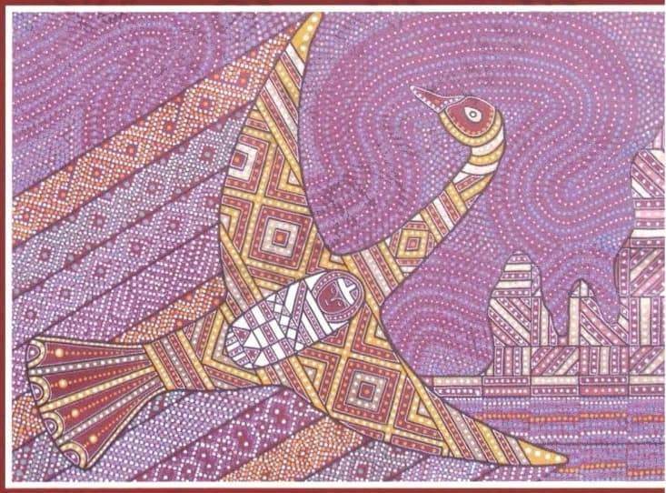

Царь Коръ

Для русского интерфейса используется русское издание. При выборе английского, финского или эстонского интерфейса автоматически используется английское издание.

Для русского интерфейса используется русское издание. При выборе английского, финского или эстонского интерфейса автоматически используется английское издание.